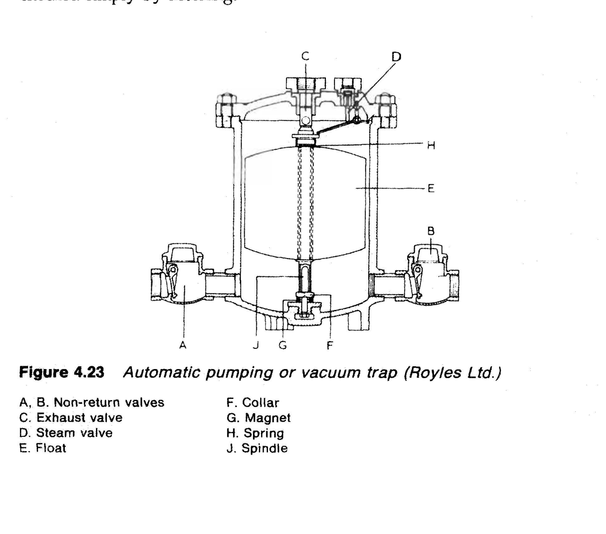
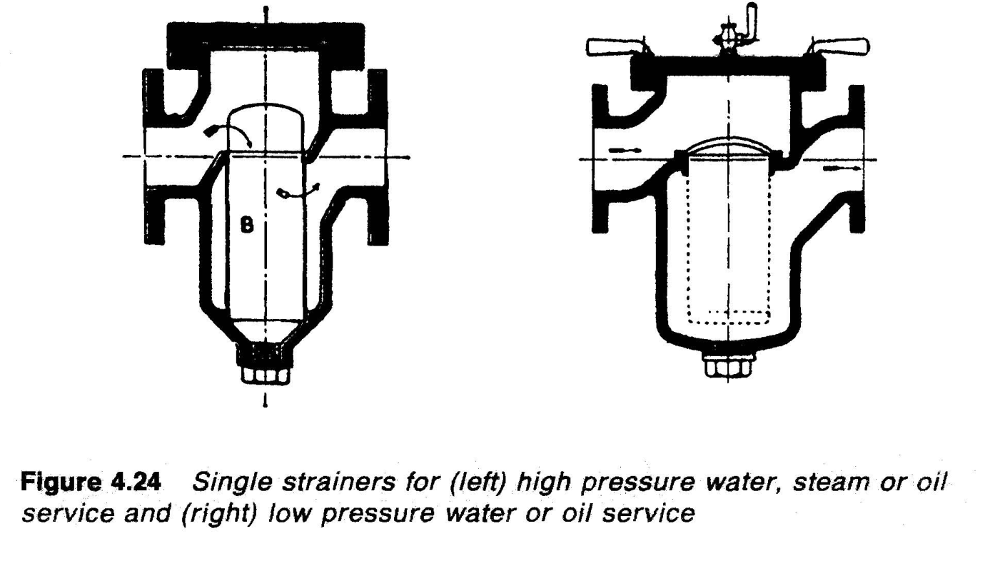
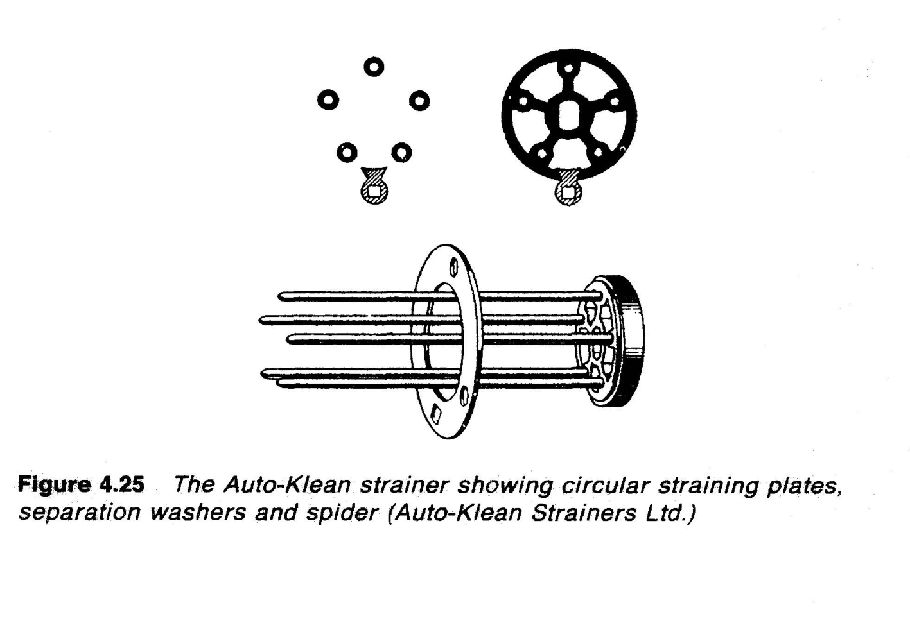
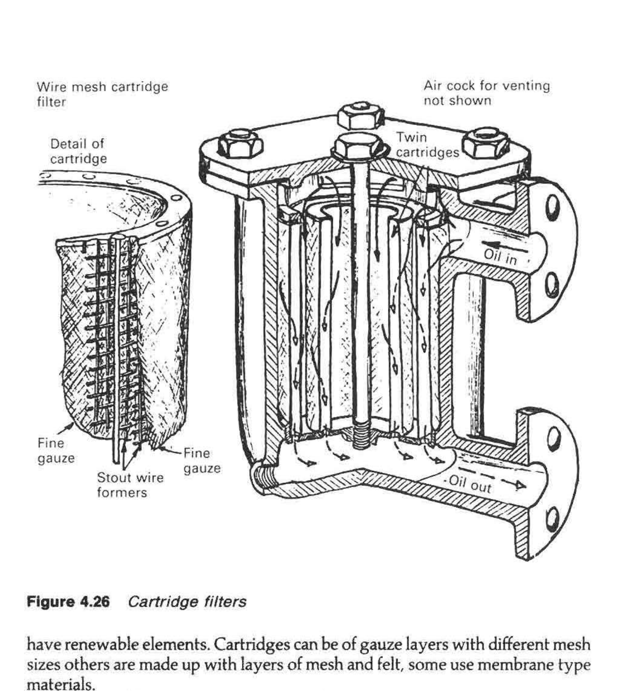
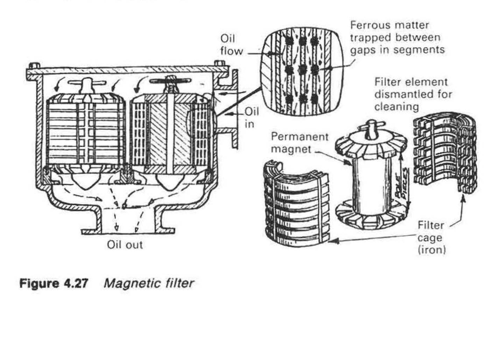

Figure 4.23
Automatic pumping or vacuum trap

Source: D:\dev\projects\voila\data\input\Pages from Marine Auxiliary Machinery 7th ed. - H. McGeorge (1995) WW.pdf
Figures: 5
Automatic pumping or vacuum trap

Single strainers for high pressure water, steam or oil service and low pressure water or oil service

The Auto-Klean strainer showing circular straining plates, separation washers and spider

Cartridge filters

Magnetic filter
